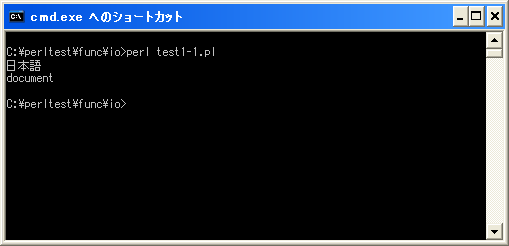
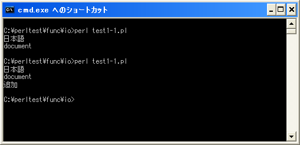

open関数
「open」関数はファイルを開きファイルハンドルを割り当てます。
※ファイル操作について詳しくは「ファイル操作」を参照して下さい。
open open(FILEHANDLE[,EXPR]) open(FILEHANDLE[,MODE,EXPR]])
ファイル名及びファイルハンドルを指定してファイルを開きファイルハンドルを 割り当てます。 パラメータ: FILEHANDLE ファイルハンドル EXPR ファイル名 MODE モード 戻り値： ファイルを開くことに成功したら真(true)、失敗したらundef
1番目の引数にはファイルとのコネクションに対して割り当てるファイルハンドル名を指定します。2番目の引数にはファイル名を指定します。
モードはファイル名に含めて記述することも出来ますが、別に指定することも出来ます。別に指定する場合は2番目の引数がモード、3番目の引数がファイル名となります。
モードはファイルをどのように開くのかを指定します。以下のモードが指定可能です。
| 記号 | モード | ファイルが存在した場合 | ファイルが存在しない場合 |
|---|---|---|---|
| < | 読み込み専用 | 変更無し | エラー |
| > | 書き込み専用 | ファイルサイズを0にする | 新規作成 |
| >> | 書き込み専用 | 変更無し | 新規作成 |
| +< | 読み書き両用 | 変更無し | エラー |
| +> | 読み書き両用 | ファイルサイズを0にする | 新規作成 |
| +>> | 読み書き両用 | 変更無し | 新規作成 |
書き込み可能なモードの場合に、ファイルサイズが0になる場合はいったんデータが全て消去された後で先頭から書き込みされます。ファイルの変更が無い場合は既存のファイルのデータは変更せず、ファイルの最後から追加で書き込みが行われます。
モードが指定されていない場合は「<」が指定された場合と同じく読み込み専用となります。
また次のようなモードも用意されています。
| 記号 | モード |
|---|---|
| | command | ファイル名をコマンドとして扱い、ファイルハンドルからの出力をパイプでコマンドへ渡す。 |
| command | | ファイル名をコマンドとして扱い、コマンドの実行結果をパイプでファイルハンドルへ渡す |
ファイル名の代わりにコマンドを記述し、「|」を先頭または最後に付けることでファイルハンドルとコマンドをパイプでつなげることが出来ます。
またファイル名として「-」を指定した場合は標準入力を開き、「->」を指定した場合は標準出力を開きます。
| ファイル | 意味 |
|---|---|
| - | 標準入力を開く |
| -> | 標準出力を開く |
具体的には次のように記述します。
open(DATA, "filename.txt"); open(DATA, "> filename.txt"); open(DATA, ">", "filename.txt");
ファイル名とモードを合わせて指定する場合は「モード ファイル名」のような記述方法となります。
サンプルプログラム
では簡単なプログラムで確認して見ます。
use strict;
use warnings;
use utf8;
use open ":utf8";
binmode STDIN, ':encoding(cp932)';
binmode STDOUT, ':encoding(cp932)';
binmode STDERR, ':encoding(cp932)';
open(DATAFILE, "< data.txt") or die("Error");
while(my $line = <DATAFILE>){
chomp($line);
print "$line¥n";
}
close(DATAFILE);
open(DATAFILE, ">>", "data.txt") or die("Error");
print DATAFILE "追加¥n";
close(DATAFILE);
上記を「test1-1.pl」の名前で保存します(文字コードはUTF-8です)。そしてコマンドプロンプトを起動し、プログラムを保存したディレクトリに移動してから次のように実行して下さい。

なお「data.txt」と言うテキストファイルをプログラムと同じディレクトリに設置しています。このファイルの文字コードはUTF-8(BOM無し)です。
実行すると「dta.txt」ファイルに記述された内容を読み込み画面に表示します。そして「追加」と言う文字列を「data.txt」ファイルに追加で書き出しています。
再度同じプログラムを実行すると追加された文字も含めて読み込みが行われます。

( Written by Tatsuo Ikura )

著者 / TATSUO IKURA
初心者～中級者の方を対象としたプログラミング方法や開発環境の構築の解説を行うサイトの運営を行っています。